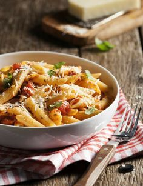

Spaghetti Recipe

Ingredients:
- 1 pound spaghetti
- 2 tablespoons olive oil
- 1 onion, chopped
- 3 garlic cloves, minced
- 1 can (28 oz) crushed tomatoes
- Salt and pepper, to taste
Instructions:
- Bring a large pot of salted water to a boil.
- Cook the spaghetti according to package instructions.
- In a large skillet, heat the olive oil over medium heat.
- Add the chopped onion and cook until softened, about 3-4 minutes.
- Add the minced garlic and cook for an additional minute.
- Add the crushed tomatoes, salt, and pepper. Stir to combine.
- Simmer the sauce for 10-15 minutes, stirring occasionally.
- Drain the cooked spaghetti and add it to the skillet with the tomato sauce.
- Toss to combine and serve hot.